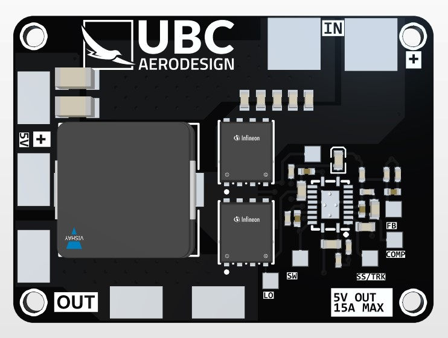

UBC AeroDesign Power Distribution Board
Project Images
Learning
- PCB design using Altium.
- PCB manufacturing and troubleshooting/testing.
- DC-DC converter design and topologies.
Project Overview
As part of my role on the avionics team at UBC AeroDesign, I designed a power distribution PCB for stepping down power from the main battery to the rest of the components on the plane. I:
- used Altium to design a 30V to 5V buck converter.
- assembled a PCB through a combination of hand and reflow soldering and conducted hardware troubleshooting tests.
Background
A buck converter is a type of electronic power circuit used to step down DC voltage while maintaining the same power.
The circuit is fairly simple, with the main components being a switch, an inductor, and an output capacitor.
The switch is responsible for decreasing the input voltage by rapidly turning on and off.
If, for a given period of time, the switch is off for an average of 50% of the period, the output will see a
50% reduction in voltage. This percentage of time that the switch is off
compared to the overall period is called the duty cycle. This method of controlling the output through
rapidly turning on and off a switch is called PWM, or pulse-width modulation. Practically, an actual switch is not used. Most of the times, it's actually a transistor such as a MOSFET or
BJT.
However, in those times where the switch is open, the voltage at the output will go to 0. As a consequence, as the switch is turned on and off, the output voltage will also fluctuate. To maintain
a constant voltage and current delivery, an LC filter is implemented at
the output. The inductor resists changes in current and emits an EMF to keep current flowing constant while
the capacitor will also emit current when it senses a change in voltage.
To give the current a path back to the negative end of the inductor when the switch is open, we add a
Schottky diode in parallel with the load and capacitor.
Buck converters are often used in power supplies due to their high efficiency, as the voltage is stepped down
through a switch instead of dissipating voltage as heat. Moreover, buck converters can step voltage down from
a wide range of input voltages to then produce a wide range of output voltages.
Design and Manufacturing
To select the best suited choice for our requirements, I utilized a weighted decision matrix to
rank various IC choices. All ICs had to be able to step 30V input down to 5V and output 10 A (in line with our power requirements for the plane).
However, there were other specifications such as cost, supply, and footprint size, among others, that also had to be considered.
Using a weighted decision matrix helped me quantitatively rank choices and provide a strong justification to
my team as to why I chose a particular IC. Finally, I decided on the Texas Instruments LM5146.
Following the datasheet, I calculated several values essential to designing the buck converter circuit. This
would be the duty cycle, the inductor ripple current, peak switching/diode/inductor current, and the minimum inductance
required for the inductor component.

The final design is shown above. This includes an input current protection circuit, MOSFETs to handle the
switching (controlled by the IC through a PWM signal), and castellated edges for soldering the buck converter
onto a larger printed circuit board. Via stitching was used to ensure minimum impedance for return currents. The use of polygon pours as power planes was also extensively used
as this provides better current-carrying capacity and heat dissipation.
For our initial testing, the protection circuits were removed as well as the castellated edges to save on
cost. The components were soldered on using a reflow oven.

Testing was done through using an oscilloscope to measure the converter's input and output waveforms, and using measured values to calculate overall efficiency. The input voltage was also varied while monitoring the output voltage ripple and load regulation.